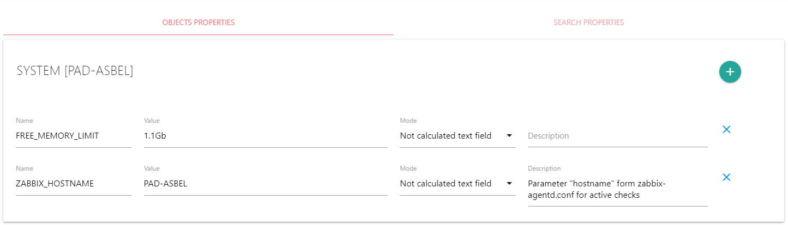
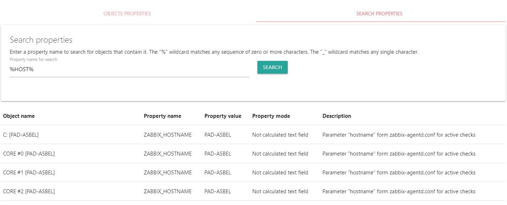

Возвращаемое значение: разделенными запятыми object ID (идентификаторы объектов у которых редактируются свойства).
Предназначение Objects properties
Свойства объектов могут устанавливаться для использования следующим образом:
- В качестве подсказки. Например, "в сервере не работает 1 порт сетевой карты. Используйте 3 оставшихся порта"
- В качестве значения переменной. В том числе для того, чтобы переопределить переменную, описанную в счетчике. В случае совпадения названий переменных в счетчике и в свойстве объекта, при вычислении данных счетчика приоритет будет за значением переменной из свойства объекта. Например, минимальный лимит оперативной памяти для сервера, после которого будет сгенерировано событие в счетчике для всех серверов установлен как 4Gb. Для файлового сервера, в котором вся оперативная память чаще всего занята файловым кэшем, минимальный лимит памяти может быть переопределен в свойствах объекта и установлен как 1Gb.
- При необходимости, можно разработать свое действие, которое будет использовать определенные свойства объектов в своих целях и отображать их в удобном для пользователя виде. Например, это может быть инвентаризация оборудования, которая будет использовать такие свойства, как название платформы, количество дисков, объем оперативной памяти, инвентарный и серийный номер и прочее
Описание Objects Properties
С помощью вкладки Objects properties осуществляется управление свойствами объекта. Для редактирования свойств объектов вам необходимо выбрать один или несколько объектов в системном меню Objects. Выбранные объекты отобразятся в верхней части формы редактирования свойств.
Object property
Элемент Object property содержит одно из свойств объекта. Для добавления нового свойства необходимо нажать на кнопку add. Для удаления свойства объекта необходимо нажать на "x" в правом углу соответствующего элемента Object property
Name
Наименование свойства. Должно быть уникальным для одного объекта
Value
Значение свойства объекта или формула для вычисляемого свойства объекта. В зависимости от Mode, поле ввода может быть текстовой строкой, многострочным текстом или checkbox
Mode
| Тип | Описание |
|---|---|
| Not calculated text field | Свойство объекта является неизменной константой. Оно отображается в однострочном поле ввода. При использовании свойства в качестве переменной, значение свойства никак не преобразуется. |
| Checkbox | Свойство объекта является неизменной константой. Оно отображается в поле ввода типа checkbox и может принимать значение true или false. При использовании свойства в качестве переменной, значение свойства никак не преобразуется. |
| Not calculated text area | Свойство объекта является неизменной константой. Оно отображается в многострочном поле ввода. При использовании свойства в качестве переменной, значение свойства никак не преобразуется. |
| Calculated expression | Свойство объекта является выражением и вычисляется каждый раз перед получением данных счетчиками, связанными с объектом. Оно отображается в многострочном поле ввода. Для вычисления значения свойств объекта используются алгоритмы для вычисления значений переменных в счетчиках. Подробнее о вычислениях переменных можно прочитать на страницах помощи Counter settings и Примеры использования вычислений в ALEPIZ. В случае совпадения названий переменных в счетчике и в свойстве объекта, при вычислении данных счетчика приоритет будет за значением переменной из свойства объекта. |
Description
Текстовое описание свойства объекта. Используется в качестве справочной информации, поясняющей назначение и использование свойства объекта.
deleteOtherProperties (All other properties will be deleted (when not 0))
Скрытый параметр, который можно использовать в задаче для автоматизации при установки свойств объекта. Когда он не 0, все не указанные свойства объекта будут удалены. По умолчанию 0.
Конверсии
Для удобства записи числовых значений переменных можно использовать предопределенные конверсии. Например, для указания минимального лимита памяти в 4Gb нет необходимости переводить это число в байты (4294967296) для сравнения с получаемым значением из счетчика. Можно использовать любые конверсии из таблицы ниже. Система автоматически осуществит перевод в случае с данными - в байты, а в случае с временем - в миллисекунды. Будьте внимательны с работой с временем: многие счетчики используют в качестве единицы времени не миллисекунды, а секунды. В этом случае необходимо делать преобразование значения конверсии в счетчике за счет деления значения на 1000.
| Название | Описание | Множитель |
|---|---|---|
| Kb | Килобайт | 1 024 |
| Mb | Мегабайт | 1 048 576 |
| Gb | Гигабайт | 1 073 741 824 |
| s | Секунды | 1 000 |
| m | Минуты | 60 000 |
| h | Часы | 3 600 000 |
| d | Дни | 86 400 000 |
| w | Недели | 604 800 000 |
Описание Search Properties
Вкладка Search Properties предназначена для поиска объектов, содержащих какое-то свойство. Для того, чтобы найти объекты, необходимо ввести имя свойства в поле Property name for search и нажать на кнопку Search. Поиск не чувствителен к регистру имени свойства. В имени свойства можно использовать символ "%" для поиска любой последовательности из нуля или более символов или символ "_" для поиска любого одиночного символа.
